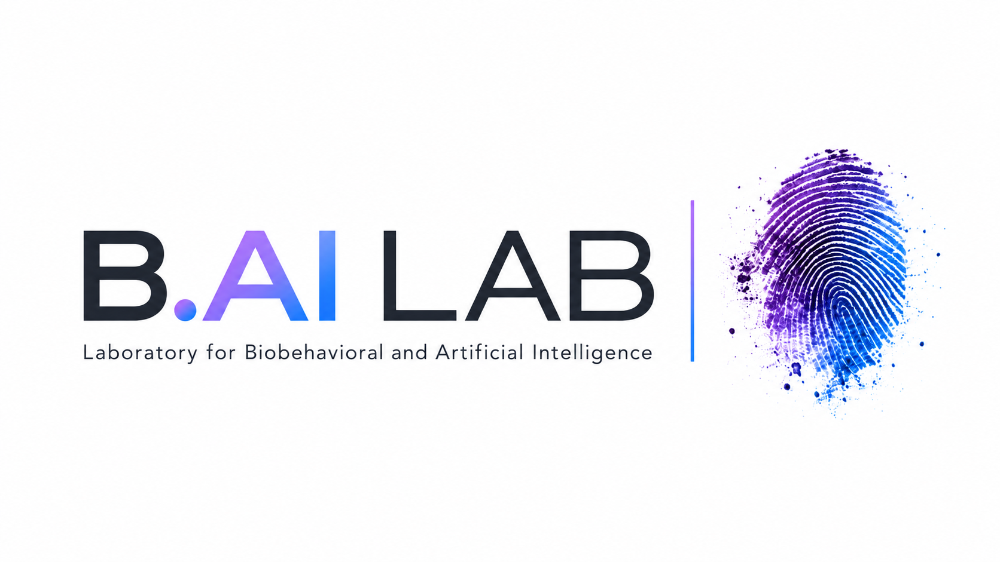

Human signals × context × intelligent systems

Signals synchronized. Events contextualized. Data AI-ready.
A unified research platform for clinical and home-based physiological monitoring — connecting physiological signals, individual baselines and real-world events.
B.AI LAB / RESEARCH SOFTWARE
Explore the platform.
One platform. Two research environments. Context-aware physiological monitoring.
Integrated monitoring across clinical environments and daily life.
Tap an application to open a larger video with playback controls.
01 / CLINICAL ENVIRONMENT
Clinical Monitoring
High-resolution physiological assessment.
02 / EVERYDAY ENVIRONMENT
Contextual Health Monitoring
Home-based physiological assessment.
Led by
Morris Gellisch
Dr. rer. nat. Morris Gellisch, M.Ed., M.Sc.
B.AI Lab connects physiology, transparent data infrastructure and artificial intelligence across clinical research and medical education. The lab is built around a simple premise: meaningful inference depends on knowing not only what the body did, but when, under which conditions and in response to what.
Research record
Selected publications.
Work spanning physiological computing, digital health, stress physiology, medical education and developmental biology.
Loading publication data…
Academic service
Editorial & peer-review work.
Editorial responsibilities, journal reviewing and international doctoral assessment across digital health, medicine, neuroscience and education.
Editorial roles
Loading editorial roles…
Peer review
Loading reviewing activity…
Collaborate
Clinical signals. Shared infrastructure. New models.
We are interested in collaborations around continuous biosignal acquisition, multimodal physiological data, transparent AI, digital health infrastructure and physiology-informed medical education research.